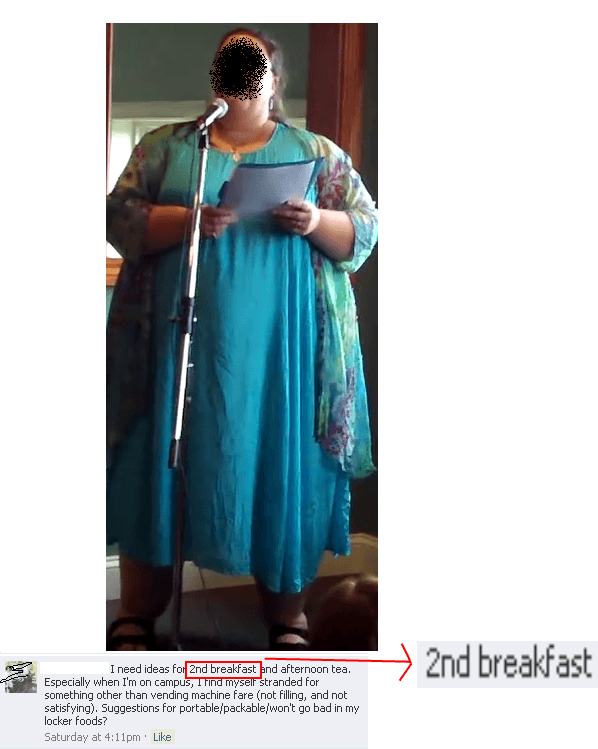

Americans are fucking fat, and yet, when you look at percentages of obesity, America manages to just barely be in the top 10. Why? Why have so many billions of people become obese in only the last 30 years or so? I would like to analyze the “turning point” for when Americans started to become obese, shining some light on the rest of the world as well.
Back To The Past

For all of the talk of how “Everything in the past was worse than things are now,” I can safely say that at least in terms of Body Mass Index—a legitimate measure of obesity for approximately 95% of humanity, no matter what fat women say—things in the past were better. The average American man in the 1960s weighed about 160 pounds, and the average American woman was a slim and trim 120 pounds with a 28 inch waist. And nowadays the average American woman is 160 pounds, and the average man much heavier than that.
What happened? Studies seem to indicate that the sudden spike in obesity only started around 1980. But is there a specific “X factor” that caused it to happen? The mainstream writers always seem to argue that “increased availability and affordability of food, combine with intense marketing, explains excess energy intake and weight gain amongst different populations”. But frankly, that argument always seemed a bit flimsy to me.
I don’t think there’s any more food advertising available now then there was back in the 60s—if anything, you’d imagine advertising to be more harmful in a day and age when cigarettes could be legally advertised on cartoon shows. And that’s clearly not the case.
Debunking A Few Myths
One of the studies I used for this was Shapiro’s study from Brown University, and perhaps the section I liked best is when he discusses how, contra the “unrealistic body standards make women anorexic!” propaganda we hear from feminists, the occasions of that disorder occurring are extremely low, and “We do not find a significant increase in the amount of people that are dangerously underweight”. But then again, you could just take a quick glance around at American women and realize that there’s clearly not that much anorexia going around.

Speaking of throwing shade in the face of fatties, the study’s medical research team, most medical doctors, and certified personal trainers such as myself all agree that the single biggest cause of weight gain is the consumption of more calories than you expend with physical effort.
Ultimately, all of the studies I read for this article refer to the “big two” causes of the obesity epidemic: a nationwide decrease in physical activity and a nationwide increase in caloric consumption. Certainly, these things exist—just take a look at restaurant portions. But again, we have to ask why?
In other words, even if there’s junk food and high fructose corn syrup flying through the sky, why do people choose to eat it instead of good, wholesome food? If I may, I have a few theories as to why the country has decided en masse to eat shitty food and not exercise…
1. Increased food additives, processing, and lack of regulation
Agrobusiness corporations have, in the last 30 years or so, been given free reign to load up their food with as many preservatives, soy products, and high fructose corn syrup as possible. Because, hey, it won’t kill anybody and it saves them a shitload of money!
Soy and preservatives have been linked to many health disorders, and high fructose corn syrup’s insidiousness is due to its ubiquity rather than its inherent unhealthiness. Chances are if you look at a fat person’s diet, it will have a lot of these things.
It’s time once again to break out the potted meat food product. Protip: anything that has to clarify that it is, in fact, food, is not something you want to eat
2. Increased Poverty & Stagnant Wages
I’m honestly surprised how rarely this is brought up. It is often remarked that the USA is one of the few countries in world history where the poor are fat and the wealthy are slim. It’s also a common talking point that American wages have basically stagnated since the 1970s in terms of real purchasing power, while prices have increased. Compare the prices of healthy food to the price of unhealthy food.
While I have argued that it’s not difficult to pinch pennies and get healthy food for yourself even on a barely-above-poverty salary, let’s also bear in mind that most people are pretty goddamn stupid, and thus aren’t aware of this fact. If all you’re looking for is enough food to get you through the day, and all you have is 20 bucks, you can buy a lot more junk food with 20 bucks than you can buying good food.
Along with the destruction of American industry forcing many to live paycheck to paycheck, there’s also…
3. Destruction Of The American Family
As we commonly discuss here on Return of Kings, the American family is in a state of disrepair, which is unfortunate because the children of single parents (especially single mothers) tend to grow up to become dysfunctional adults. Therefore, I’ve always felt that it’s not too much of a stretch to assume that a dysfunctional family will neither feed the children proper food, nor get them involved in some sort of physical activity. After all, if some urbanite woman is still “riding the carousel” into her 30s, is she going to cook for her sprog? Hell no!
4. Decline of American Culture and Community
Related to the last one, numerous studies have shown that increased multiculturalism and diversity have the adverse effect of destroying any sense of community and shared culture amongst any group of people, whether it be a city or an entire nation. And when the streets aren’t safe, and grocery stores are closed down due to rampant criminality (the actual cause of the alleged “food deserts” nice white people complain about sometimes), you’re going to see an increase in obesity and lack of physical activity–and count on that.
Conclusion
So, it seems to me that there isn’t one single factor or turning point that caused America to become a nation of morbidly obese lardasses. Rather, it was many factors happening simultaneously with each other that seemed to cause it.
Fixing it, on the other hand, will also require more than “raising awareness” of healthy food options or promoting “beauty at any size.”
Read More: Monsanto Ruins American Bodies